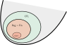

Adding Expressive Power to Automata
In the previous two lectures, we got acquainted with the context-free languages (\(\mathsf{CFL}\)). Context-free languages were defined to be the least solutions of polynomial systems, or equivalently, derived from/yielded by a variable in a (context-free) grammar. We saw from the Pumping Lemma episode that these extend strictly past the family of regular languages, and in fact many simple languages (eg., \(L_{a=b} = \{a^nb^n \mid n \in \mathbb{N}\}\)) can be seen in one family but not the other.
Grammars are very much like beefed-up regular expressions: they are a syntax with which we can specify languages. But here is one issue with grammars: how do we decide if a particular word is derivable/parsable in a grammar? It might be hard to see why this is a difficult question at first, but think about it: given a word \(w \in A^*\) and a grammar \(\mathcal G = (X, A, R)\) and a variable \(x \in X\), in order to reliably tell whether \(w\) is derivable from \(x\) in \(\mathcal G\) we would basically need to try every combination of rewrite rules starting from \(x\) until we stumble on \(w\). Not so efficient!
What we really need is a program that takes words as input and spits out yes-or-no answers... OK, well we've already been dealing with these: they're called automata. But we know from the Pumping Lemma that finite automata are not good enough to handle all context-free languages. So how do we proceed?
Here's the general idea: finite automata are not enough.What we really need are infinite automata. But an infinite automaton doesn't necessarily require an infinite description: we could, for instance, add a bit of memory to the mix. This example from the Finite and Infinite Automata lecture comes to mind.
The state space for this game ended up being very much infinite: every time you made money, the money counter went up and suddenly you were in a completely new state. But I was able to draw the whole game on screen! The whole description of this infinite state space fits into a 350x300 grid of pixels. By adding a counter, we were able to take a finite description of a game and turn its state space into an infinite automaton. This is how we are going to develop algorithms for deciding whether a given word is derivable from a variable in a grammar: by adding memory to finite automata.
Today is a fun day where we're going to get our hands on some automata that can do things that finite automata cannot. In particular, we're going to get them to count.
Counting
The simplest kind of memory we can add onto an automaton is a counter, like in the Money Bags game above. The basic idea is behind a counter automaton is that it is like an ordinary automaton, but with every transition \(x \xrightarrow{a} y\) between states, you can add or subtract \(1\) or \(0\) to/from a counter variable, which can be thought of as an external device.
Let \(x_0 \in Q\) be a state. A run of \(\mathcal A^\#\) starting from \(x\) is a path that keeps track of the program state and the counter state, \(x_i\) and \(n_i\) respectively. Formally, it is a sequence of transitions of the form \[ (x_0, n_0) \xrightarrow{a_1 \mid p_1} (x_1, n_1) \xrightarrow{a_2 \mid p_2} (x_2, n_2) \xrightarrow{a_3 \mid p_3} \cdots \xrightarrow{a_k \mid p_k} (x_k, n_k) \] in which the following conditions are met:
- The path \[ x_0 \xrightarrow{a_1 \mid p_1} x_1 \xrightarrow{a_2 \mid p_2} x_2 \xrightarrow{a_3 \mid p_3} \cdots \xrightarrow{a_k \mid p_k} x_k \] exists in \(\mathcal A^\#\).
- The counter state starts at \(0\), i.e., \(n_0 = 0\)
- The counter is never negative: For each \(i = 1, 2, \dots, k\), \(n_i \ge 0\).
- The value of the counter after a transition is determined by the transition action: For each \(i = 0, 2, \dots, k-1\), \[ n_{i+1} = \begin{cases} n_i + 1 &\text{if \(p_i\) is \(+1\)} \\ n_i - 1 &\text{if \(p_i\) is \(-1\)} \\ n_i &\text{if \(p_i\) is \(+0\)} \\ \end{cases} \]
A word \(w = a_1 \cdots a_n \in A^*\) is accepted by the state \(x_0\) if there is a run in \(\mathcal A^\#\) starting from \(x_0\), \[ (x_0, n_0) \xrightarrow{a_1 \mid p_1} (x_1, n_1) \xrightarrow{a_2 \mid p_2} (x_2, n_2) \xrightarrow{a_3 \mid p_3} \cdots \xrightarrow{a_k \mid p_k} (x_k, n_k) \] such that \(x_k \in F\) (the ending state \(x_k\) is accepting) and \(n_k = 0\) (the counter has been reset). This kind of run is called an accepting run.
The language accepted by \(x_0\) is the language \(\mathcal L(\mathcal A^\#, x_0)\) of all words that are accepted by \(x_0\).
On the other hand, there is no run corresponding to the path \(x \xrightarrow{a \mid +1} y \xrightarrow{b \mid -1} y \xrightarrow{b\mid-1} x\). This has to do with the counter: remember that the counter state cannot fall below \(0\). So, if the counter state is \(0\), then trying to take a \(\xrightarrow{a_i \mid -1}\) step would invalidate the run (i.e., it would no longer count as a run). In the path \(x \xrightarrow{a \mid +1} y \xrightarrow{b \mid -1} y \xrightarrow{b\mid-1} x\), the corresponding attempt at a run gets stuck after the second transition.
-
Show that the following words are accepted by \(x\) by exhibiting an accepting run.
- \(abab\)
- \(aabb\)
- \(ababaabb\)
-
Consider all possible paths in each case to show that the following words are not accepted by \(x\).
- \(aaabb\)
- \(abba\)
- \(aabbba\)
- Use the Pumping Lemma to show that \(\mathcal L(\mathcal A^\#, x_0)\) is not regular.
(Finite) counter automata really are more powerful than finite automata, as you are about to see.
- \(L_0 = \mathcal L((ab)^*)\)
- \(L_1 = \{a^nb^n \mid n \in \mathbb N\}\)
- \(L_2 = \{a^nb^kc^{n+k} \mid n,k \in \mathbb N\}\)
Double-Counting
Adding a counter to our automata is a simple way of increasing its expressive power. But you know what's cooler than a counter? Two counters.
Where \(A = \{a,b,c, d\}\), design some two-counter automata to recognize the following languages.
- \(L_1 = \{a^nb^kc^nd^k \mid n,k \in \mathbb{N}\}\)
- \(L_2\), consisting of all the words \(w \in A^*\) such that \(w\) has the same numbers of \(a\)s, \(b\)s, and \(c\)s.
- \(L_3 = \{a^n b^n c^n \in A^* \mid n \in \mathbb N\}\)
A Short Experiment: Integer Counters
Let's consider a slightly different kind of automaton: an integer-counter automaton. This is the same thing as a counter automaton, with one difference: in a run, the counter is allowed to fall below zero (i.e., be negative).
- \(L_1 = \{a^nb^n \mid n \in \mathbb N\}\)
- \(L_2 = \{w \in \{a,b\}^* \mid \text{\(w\) has an equal number of \(a\)s and \(b\)s}\}\)
- \(L_3 = \{a^nb^kc^{n+k} \mid n,k \in \mathbb N\}\)
- \(L_4 = \{a^nb^kc^nd^k \mid n,k \in \mathbb{N}\}\)
- \(L_5\), consisting of all the words \(w \in A^*\) such that \(w\) has the same numbers of \(a\)s, \(b\)s, and \(c\)s.
- \(L_6 = \{a^n b^n c^n \in A^* \mid n \in \mathbb N\}\)
Other possibilities?
Counters are the simplest type of memory to add to an automaton. But what about others?
- What would a reasonable kind of transition between states in a stack automaton look like?
- What would a reasonable definition of "(accepting) run" be for stack automata?
- What kinds of languages do you think we could recognize with stack automata that we cannot recognize with counter automata?